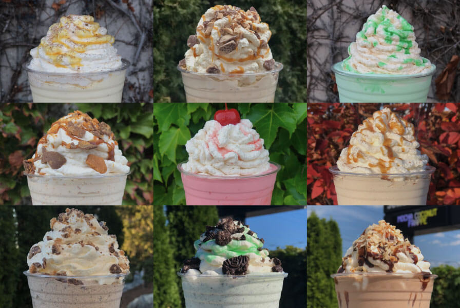

Plan a Delicious Custard Crawl
Sample Milwaukee's most beloved frozen treats with curated tips for three legendary stops in the Cream City.

Milwaukee is famous for its creamy, velvety custard stands that keep locals coming back decade after decade. When the weather warms up, the city buzzes with talk of the seasonal flavor releases and late-night cones. Locals and visitors alike can savor a scoop (or two) while exploring the welcoming neighborhoods that define the city's food scene.